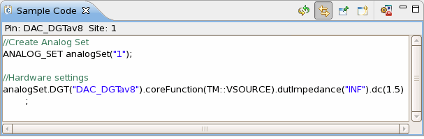
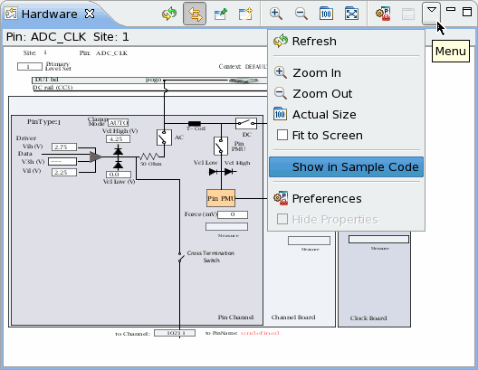

Sample Code view
The Sample Code view displays the complete test method code of the pin settings in the Hardware View. You can directly copy and paste the code into your test method program.

For the following cases, the Sample Code view shows "No Sample Code available":
- The selected pin is neither an analog pin nor an RF pin. For exceptions, see the following
paragraph.Note For digital pins, SmarTest generates sample code after a measurement in in the Hardware view. For example, close the PPMU relay and start a PPMU measurement (see the Pass/Fail Pin DC Measurement section or the ADC Pin DC Measurement section in Hardware view for digital pins), and refresh Sample Code view. SmarTest displays the corresponding sample codes for PPMU. For DPS pins, you need to close different relays to run different measurements.
- The selected pin is an analog pin and its core function is set to NONE.
To display the code, take one of the following actions:
- In the Pin Browser view, right-click the desired pin and select Show in Sample Code.
- In the Hardware view showing the hardware information for the desired pin, click the
Menu button on the top right and select Show in Sample
Code.

You can also compare the code of different pins by opening multi Sample Code views in the same way of Opening multiple Hardware views of different pins.
Sample Code view icons
The figure below shows the function of each of the icons at the right top of the Sample Code view.

|
Refresh the test method code in this view. After changing the pin setting in the Hardware View, click this button, the test method code in this view will be updated to the settings in the Hardware View. |

|
Link with editor and selection. When this button is pressed, the Sample Code view is linked with the pin selection and the Hardware view:
|

|
Pin this view. When the Sample Code view displays the code of the setting of an analog pin or a RF pin, click this button, the display of the Sample Code view is pinned to the current pin. |

|
Open new Sample Code view. When the Sample Code view displays the code of the setting of an analog pin or a RF definition, click this button, a new Sample Code view displaying the same code opens. |

|
Setup preferences. |
Functional changes
- Introduced in SmarTest 6.5.0
- SmarTest 6.5.3: The Sample Code view displays the test method code for all types of pins.
- SmarTest 6.5.3: The Sample Code view is linked with the pin settings in the activated Hardware view.